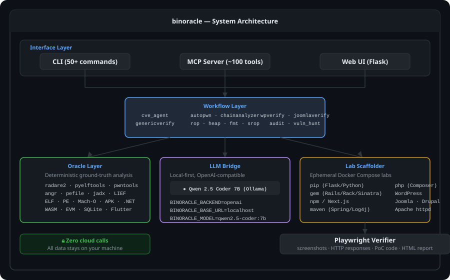

binoracle
Herramienta de investigación autónoma de exploits CVE y reversing binario. Todo el análisis se ejecuta localmente — ningún dato sale de tu máquina.
Instalación
Requisitos previos: Python 3.10+, Docker 20.x+, Ollama 0.3+.
# 1. Instalar binoracle
pip install binoracle
# 2. Instalar Ollama y descargar el modelo (Linux / macOS)
curl -fsSL https://ollama.com/install.sh | sh
ollama pull qwen2.5-coder:7b
# 3. Configurar el backend LLM
export BINORACLE_BACKEND=openai
export BINORACLE_BASE_URL=http://127.0.0.1:11434/v1
export BINORACLE_MODEL=qwen2.5-coder:7b
# 4. Investigar un CVE con el motor autónomo
binoracle cve CVE-2025-27516
# 5. Analizar un binario
binoracle triage ./binario_objetivoexport a ~/.bashrc o ~/.zshrc para que persistan entre reinicios de sesión.
Dos motores
binoracle expone dos pipelines de análisis independientes que pueden usarse por separado o en combinación.
Motor CVE
Recibe un identificador CVE. Obtiene el descriptor de NVD y se lo pasa a un LLM local que genera hipótesis de exploit de forma autónoma. Levanta un laboratorio Docker Compose efímero, ejecuta el PoC, registra capturas de pantalla Playwright en cada paso de verificación y escribe un informe HTML autocontenido en disco.
Ningún dato se envía a servicios externos. El LLM se ejecuta íntegramente en tu máquina mediante Ollama.
binoracle cve CVE-2025-27516
binoracle cve-batch CVE-2025-27516 CVE-2024-23334Motor RE Binario
Recibe un fichero binario. Ejecuta análisis estático (símbolos, importaciones, secciones, mitigaciones), opcionalmente trazado dinámico, alimenta el código decompilado al LLM que selecciona la técnica de exploit y genera un script pwntools funcional. Genera un informe HTML con la cadena de razonamiento completa.
Compatible con ELF, PE, Mach-O, APK, WASM, Go, Rust, .NET, EVM y SQLite.
binoracle triage ./binario
binoracle pwn ./binarioMotor CVE
El motor CVE es completamente autónomo. El LLM local recibe únicamente la descripción cruda de NVD — sin pistas del analista, sin prompts guiados, sin plantillas precargadas. Las hipótesis se generan exclusivamente a partir de esa descripción.
NVD / NIST LLM local Lab Docker Playwright Informe HTML
Descriptor CVE --> Qwen 2.5 Coder --> entorno efímero --> capturas --> solo en disco
sin pistas Docker Compose cada paso HTML+CSS
Cada ejecución CVE levanta un entorno Docker Compose nuevo exclusivo para ese CVE. El entorno se elimina automáticamente al terminar la ejecución. No se conserva estado de laboratorio entre ejecuciones.
Clases de vulnerabilidad soportadas
| Clase | Ecosistemas | Auto PoC |
|---|---|---|
| SSTI | Jinja2, Twig, Smarty | sí |
| SQLi (GET / POST / JSON / cabecera) | Python, Ruby, PHP, Java | sí |
| Path traversal / LFI | Python, Ruby, Node, httpd | sí |
| RCE / inyección de comandos | Python, Ruby, Node | sí |
| XSS (reflejado / almacenado) | Python, Node | sí |
| SSRF | Python, Node | sí |
| XXE | Java / Maven | sí |
| Deserialización | Java, Ruby (Marshal) | sí |
| Bypass de autenticación / IDOR | Python, Ruby, Node | sí |
| Subida de ficheros / webshell | Python | sí |
| Redirección abierta | Python, Ruby, Node | sí |
| CSRF | Python, Ruby | sí |
| Plugins WordPress (100+) | WP Docker | sí |
| Extensiones Joomla | Joomla Docker | sí |
| Módulos Drupal | Drupal Docker | sí |
| Apache httpd | httpd Docker | sí |
| Spring / Struts / Log4j | Maven | sí |
| Paquetes PHP Composer | PHP Docker | sí |
| npm / Node.js / Next.js | Node Docker | sí |
| Gems Ruby (Rails, Rack, Sinatra) | Ruby Docker | sí |
Comandos
# CVE individual, idioma por defecto (español)
binoracle cve CVE-2025-27516
# CVE individual, informe en inglés, abrir en navegador
binoracle cve CVE-2025-27516 --lang en --open-report
# CVE individual, directorio de salida personalizado
binoracle cve CVE-2025-27516 --out ./informes/
# Lote paralelizado
binoracle cve-batch CVE-2025-27516 CVE-2024-23334 CVE-2025-59681
# Lote con directorio de salida
binoracle cve-batch CVE-2025-27516 CVE-2024-23334 --out ./informes/Motor RE Binario
Pipeline de análisis estático y dinámico para ficheros binarios. Cubre 50+ familias de exploit en las categorías stack, heap, format string y bajo nivel. Todo el análisis se ejecuta localmente sin subir el binario.
Binario de entrada
|
+-- Análisis estático -- símbolos, importaciones, secciones, mitigaciones (NX/PIE/RELRO/canary)
|
+-- Análisis LLM ------ revisión de código decompilado, patrones de vuln, selección de técnica
|
+-- Dinámica (opc.) --- strace / ltrace / automatización gdb
|
+-- Generación exploit - script pwntools + informe HTML estructurado
Familias de exploit
| Familia | Técnicas |
|---|---|
| Stack | ret2win, ret2libc, ret2plt, ret2csu, SROP (x86-64/x86-32/aarch64), stack pivot, cadenas ROP |
| Heap | tcache dup, fastbin dup, UAF, double-free, House-of-Force/Spirit/Orange/Mind, large-bin attack, Botcake |
| Format string | escritura arbitraria con %n, sobrescritura GOT, fuga de canary, fuga de PIE |
| Bajo nivel | shellcode (NX off), limpieza de bad-chars, exploit IO_FILE, DL-resolve, secuestro GOT |
| Bypass de canary | fuga + reutilización, fuerza bruta en fork |
| Bypass de PIE | sobrescritura parcial, cadena de fugas |
Formatos soportados
| Formato | Backends de análisis |
|---|---|
| ELF (x86-64 / x86 / ARM / MIPS / RISC-V) | radare2, pyelftools, pwntools, angr, pwndbg |
| PE / PE+ (Windows) | pefile, LIEF, radare2 |
| Mach-O (macOS / iOS) | LIEF, radare2 |
| APK / DEX (Android) | apktool, jadx, androguard |
| Ensamblados .NET | dnlib, ILSpy |
| Binarios Go | go-dis, recuperación de símbolos |
| Binarios Rust | LIEF + demangling de símbolos |
| Módulos WASM | wabt, binaryen |
| Bytecode EVM | pyevmasm |
| Bases de datos SQLite | sqlite3 schema + volcado de datos |
Comandos
binoracle triage ./binario # mitigaciones, símbolos, importaciones, secciones
binoracle decompile ./binario # multi-backend: Ghidra, radare2, angr, pwndbg + LLM
binoracle pwn ./binario # cadena de exploit completa, técnica seleccionada automáticamente
binoracle rop ./binario # búsqueda de gadgets ROP + síntesis de cadenas
binoracle chain ./binario # enumeración de gadgets + script pwntools
binoracle heap ./binario # primitivas de exploit heap
binoracle fmt ./binario # explotación de format string
binoracle srop ./binario # generación de cadenas SROP
binoracle shellcode ./binario # shellcode con filtrado de bad-chars
binoracle hardening ./binario # auditoría NX, PIE, RELRO, canary, Fortify, CFIInformes
Cada investigación CVE y cada análisis binario escribe un informe HTML autocontenido en disco. Los informes son ficheros HTML únicos con CSS embebido — no requieren dependencias externas para visualizarlos.
| Sección | Contenido |
|---|---|
| Resumen ejecutivo | Puntuación CVSS, severidad, componente y versión afectados |
| Hipótesis | Cadena de razonamiento completa del LLM mostrando cómo se derivó el exploit |
| Laboratorio | Especificación Docker Compose, versiones de servicios, configuración de red |
| Evidencia | Capturas de pantalla Playwright tomadas en cada paso de verificación |
| PoC | Código de exploit completo y ejecutable: curl / Python / pwntools |
| Remediación | Guía de corrección específica con ejemplos de código antes/después |
# Abrir informe inmediatamente tras la ejecución
binoracle cve CVE-2025-27516 --open-report
# Escribir en un directorio específico
binoracle cve CVE-2025-27516 --out ./informes/
# Lote con directorio de salida
binoracle cve-batch CVE-2025-27516 CVE-2024-23334 --out ./informes/Integración MCP
binoracle expone su conjunto completo de herramientas como servidor MCP, poniendo todas las capacidades de análisis a disposición de cualquier cliente compatible: Claude Desktop, Cursor, Zed y otros. El servidor se ejecuta localmente y no requiere acceso a red.
binoracle mcp-serverAñade a la configuración de tu cliente:
{
"mcpServers": {
"binoracle": {
"command": "binoracle",
"args": ["mcp-server"]
}
}
}Todas las herramientas MCP (~100)
triage pwn rop_chain heap_exploit fmt_exploit decompile cve_investigate vuln_hunt iocscan hardening audit reachability diff_patch elf_layout pe_inspect apk_audit dotnet_inspect wasm_inspect sqlite_audit evm_inspect fuzz dynamic_trace coredump shellcode srop_chain got_hijack io_file dlresolve canary_leak pie_leak format_string heap_triage heap_tcache heap_fastbin heap_uaf heap_house stack_pivot ret2csu ret2plt ret2libc ret2win rop_search symbol_recovery import_scan export_scan section_dump string_extract entropy_scan yara_scan cve_batch vuln_classify patch_diff n_day_analysis cwe_map cvss_score exploit_db_search lab_provision lab_teardown lab_exec playwright_capture report_generate report_open web
Referencia CLI
| Comando | Descripción |
|---|---|
triage | Mitigaciones, símbolos, importaciones, secciones |
decompile | Ghidra / radare2 / angr / pwndbg + anotación LLM |
pwn | Cadena de exploit completa, técnica seleccionada automáticamente |
rop | Búsqueda de gadgets ROP y síntesis de cadenas |
chain | Enumeración de gadgets + script pwntools |
heap | Primitivas de exploit heap (tcache / fastbin / UAF / House-of-X) |
fmt | Explotación de format string |
srop | Generador de cadenas SROP |
shellcode | Shellcode con filtrado de bad-chars |
fuzz | Fuzzer simple e inteligente (integración AFL) |
dynamic | strace / ltrace / automatización gdb |
hardening | Auditoría de mitigaciones con notas de bypass |
cve | Pipeline CVE completo: obtener → lab → PoC → informe |
cve-batch | Pipeline CVE por lotes, paralelizado |
vuln-hunt | Análisis de taint estático (sinks, sources) |
ioc-scan | Escáner de IOC e indicadores de malware |
audit | Todos los oráculos + síntesis LLM |
reachability | Alcanzabilidad source-to-sink |
diff | Diff de parche y análisis N-day |
apk | Auditoría completa de APK Android |
dotnet | Inspección de ensamblados .NET |
wasm | Inspección de módulos WASM |
sqlite | Auditoría de esquema y datos SQLite |
evm | Inspección de bytecode EVM |
mcp-server | Iniciar servidor MCP |
web | Iniciar interfaz web local |
Arquitectura

Corpus de práctica
El repositorio incluye 40+ binarios vulnerables intencionalmente para practicar explotación local. Cada binario está compilado con una vulnerabilidad específica y un conjunto de mitigaciones para ejercitar una técnica concreta.
# Compilar todas las muestras (requiere Docker o gcc)
samples/build.sh
# Ejecutar la cadena de exploit contra una muestra
binoracle pwn samples/bin/ret2libc
binoracle pwn samples/bin/tcache_dup
binoracle pwn samples/bin/house_of_orange
binoracle pwn samples/bin/format_string
binoracle pwn samples/bin/srop_x64Técnicas cubiertas: ret2win, ret2libc, SROP, tcache dup, fastbin dup, UAF, sobrescritura GOT por format string, fuga de canary, fuga de PIE, cadena CSU, DL-resolve, heap botcake, house-of-orange, unsafe-unlink, stack pivot, IO_FILE, callhijack, dlresolve32.
Configuración
Toda la configuración se realiza mediante variables de entorno. No se requiere fichero de configuración.
| Variable | Por defecto | Descripción |
|---|---|---|
BINORACLE_BACKEND | openai | Protocolo del backend LLM (compatible con openai) |
BINORACLE_BASE_URL | ninguno | URL base de la API LLM (p.ej. http://127.0.0.1:11434/v1) |
BINORACLE_MODEL | ninguno | Identificador del modelo (p.ej. qwen2.5-coder:7b) |
BINORACLE_API_KEY | ninguno | Clave API — solo necesaria para backends en la nube |
BINORACLE_LANG | es | Idioma del informe: es o en |
# LLM local via Ollama (recomendado — completamente offline)
export BINORACLE_BACKEND=openai
export BINORACLE_BASE_URL=http://127.0.0.1:11434/v1
export BINORACLE_MODEL=qwen2.5-coder:7b
# Backend en la nube compatible con OpenAI (opcional)
export BINORACLE_BASE_URL=https://api.openai.com/v1
export BINORACLE_API_KEY=sk-...
export BINORACLE_MODEL=gpt-4o-mini
# Informes en inglés
export BINORACLE_LANG=enComparación
| Capacidad | binoracle | REA |
|---|---|---|
| Pipeline autónomo CVE (NVD → lab → PoC) | sí | no |
| LLM local via Ollama | sí | no |
| Laboratorios Docker efímeros por CVE | sí | no |
| Evidencia Playwright en informes | sí | no |
| Scaffolding WordPress / Joomla / Drupal | sí | no |
| Servidor MCP (~100 herramientas) | sí | no |
| Análisis APK / .NET / WASM / EVM | sí | parcial |
| Operación 100 % offline | sí | parcial |
| Cadenas stack / heap / format string / SROP | sí | sí |
| Síntesis de cadenas ROP | sí | sí |
| Decompilación multi-backend | sí | sí |
| Corpus de práctica | sí | sí |
Hoja de ruta
- Cadenas de exploit de kernel (ret2usr, UAF en drivers)
- Análisis de firmware (UEFI, Linux embebido)
- Corpus LibFuzzer sembrado desde PoC de CVE
- Cadenas multi-CVE (RCE web — escalada de privilegios local)
- Puntuación CVSS v4
- Puente Burp Suite MCP
- Decompilador JEB (Android nativo)
- Modelo ajustado para generación de hipótesis de exploit